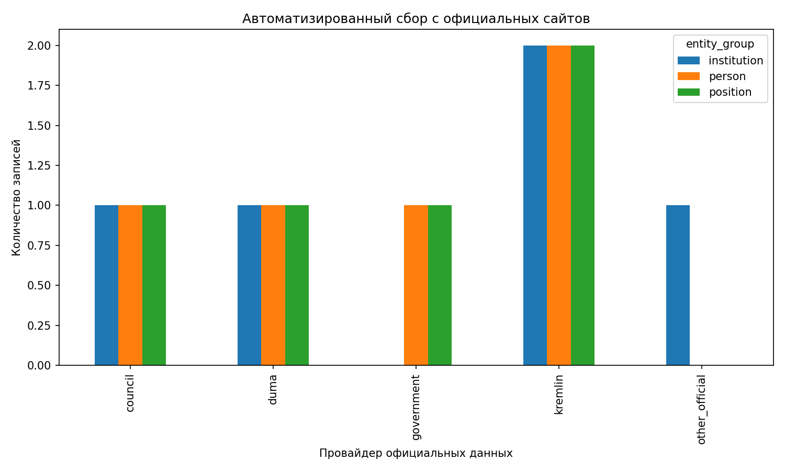

Сетевая модель российской власти
Проект сравнивает формальную архитектуру власти с многослойной сетью кадровых, координационных и аналитически реконструированных связей. Исходные Kumu-таблицы здесь превращены в воспроизводимый Python-пайплайн: данные загружаются, нормализуются, частично дополняются автоматизированным сбором с официальных сайтов, а затем анализируются и визуализируются кодом.
Исследовательский вопрос
Совпадает ли формальная институциональная карта российской власти с сетевой структурой кадровых назначений, координационных контуров и аналитически реконструированных связей, или же разные слои данных показывают разные логики связанности?
Предыдущие исследования
Проект опирается на исследования о неформальном управлении, патронализме и российской элите (Алена Леденёва, Генри Хейл, Владимир Гельман, Ольга Крыштановская, Оксана Гаман-Голутвина), а также на работы, где SNA используется напрямую для анализа российской власти и элит: Е. А. Иванов и К. В. Мельников, Кирилл Мельников, Ю. О. Гайворонский и Ю. А. Баландин. Для методологического обоснования использованы классические работы John Scott, David Knoke и Peter Marsden.
Данные
official
Формальный институциональный слой, который частично собирается кодом с официальных сайтов и сохраняется как воспроизводимый snapshot.
core
Основной формальный каркас исследовательской базы: институты, должности и формальные связи.
overlay
Аналитический слой, собранный по политологическим исследованиям о сетевых структурах и неформальных отношениях.
comention
Слой соупоминаний, который фиксирует дополнительную связанность акторов в источниках и расширяет сетевую плотность корпуса.
Методы
1. Автоматизированный сбор
Сбор и структурирование части формального институционального слоя с официальных сайтов, сохранение snapshot для воспроизводимости.
2. Сетевой анализ
Построение графа formal core и расчёт degree, betweenness и closeness centrality с помощью networkx.
3. Сравнение слоёв
Сопоставление слоёв official, core, overlay и comention по размеру, составу и типам связей.
Результаты

Формальный слой core задаёт ограниченный институциональный каркас, тогда как comention значительно увеличивает сетевую плотность за счёт соупоминаний.

Вверху formal core находятся президентский центр, правительство и парламентские институты.

Подграф показывает ядро институциональной связности, но не претендует на полное описание «реального» распределения власти.

Автоматизированный сбор пока охватывает только часть институционального слоя, но уже делает проект менее зависимым от ручного ввода.
Формальный каркас уже аналитической сети
core значительно менее плотен, чем comention, потому что фиксирует только институционально допустимые и явно размеченные связи.
Президентский центр — главный структурный узел
В formal core наибольшую центральность получает институт президента, а следом идут правительство и парламентские институты.
Слои не совпадают друг с другом
Формальная архитектура власти и аналитически реконструированная сеть описывают разные механизмы связанности и не могут быть сведены к одной плоскости.
Автосбор усиливает воспроизводимость
Даже ограниченный официальный snapshot делает институциональную часть проекта прозрачнее и лучше проверяемой.
Типы связей по слоям
| layer | type | count |
|---|---|---|
| comention | соупоминание | 1313 |
| comention | упоминание_источником | 109 |
| core | contains | 126 |
| core | занимает_должность | 102 |
| core | контроль_надзор | 7 |
| core | координация | 8 |
| core | назначение | 118 |
| core | неформальное_отношение | 12 |
| core | подчинение | 75 |
| overlay | contains | 4 |
| overlay | занимает_должность | 37 |
| overlay | неформальное_отношение | 9 |
Топ узлов formal core по degree
| label | node_type | degree |
|---|---|---|
| Институт Президента Российской Федерации | organization | 65 |
| Председатель Правительства Российской Федерации | position | 27 |
| Государственная Дума Федерального Собрания Российской Федерации | organization | 24 |
| Правительство Российской Федерации | organization | 19 |
| Совет Федерации Федерального Собрания Российской Федерации | organization | 12 |
| Федеральная служба безопасности Российской Федерации | organization | 7 |
| Заместитель Председателя Правительства Российской Федерации | position | 4 |
| Заместитель Председателя Правительства Российской Федерации | position | 4 |
Ограничения и перспективы
Ограничения
- Автоматизированный сбор пока охватывает только часть формального институционального слоя.
overlayиcomentionнельзя интерпретировать как fully verified-only данные.- Сетевые метрики чувствительны к тому, какие типы рёбер включены в formal core.
Перспективы развития
- Расширить автоматизированный сбор официальных данных.
- Добавить исторические срезы и динамику сети по годам.
- Углубить аналитический слой за счёт более строгой разметки кадровых и неформальных связей.